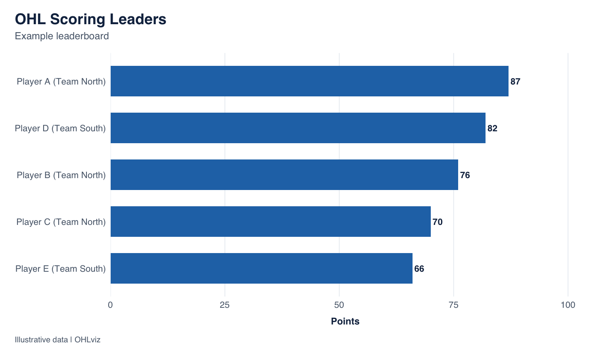
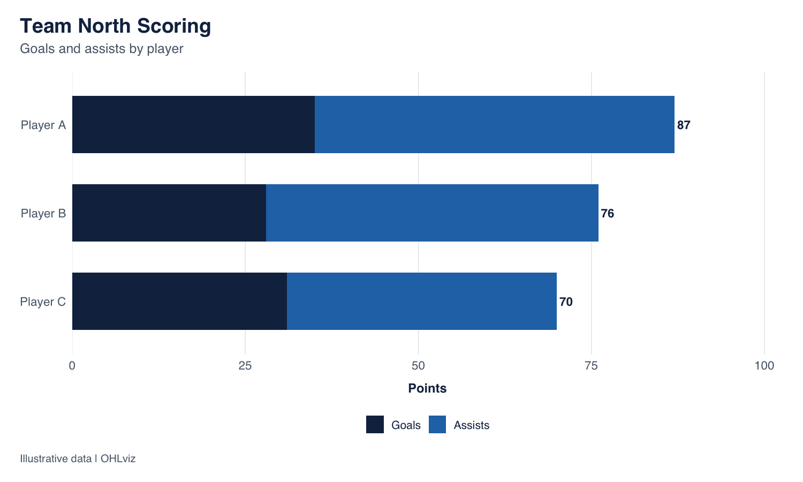
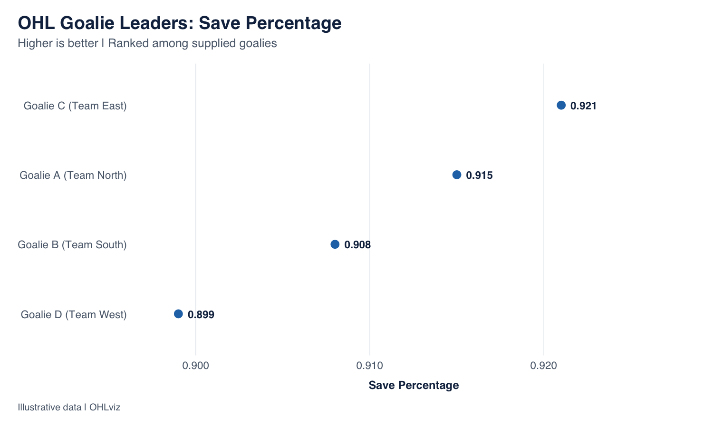
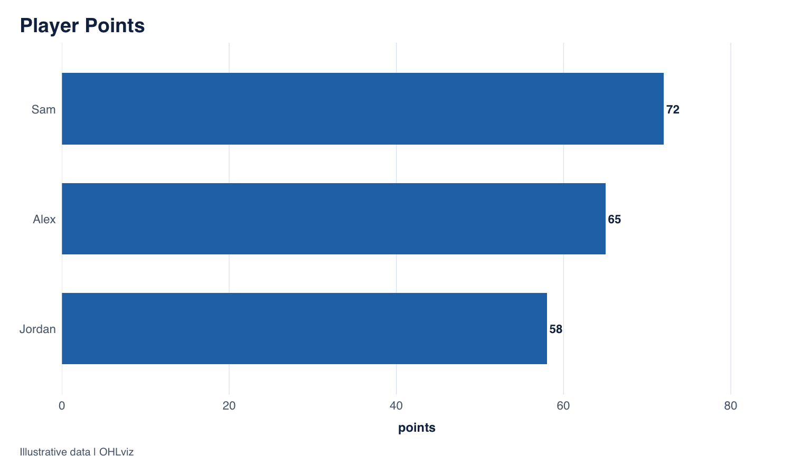

Consistent, customizable visualizations for Ontario Hockey League data.
OHLviz is an R package for creating scoring leaderboards, team scoring charts, and goalie comparisons with a shared visual style.
Designed for use with OHLpkg, OHLviz also accepts other data frames through configurable column names.
- OHLpkg retrieves, cleans, filters, and analyzes data.
- OHLviz visualizes and presents that data.
Every plotting function returns a ggplot object that you can customize and export for reports, websites, social media, and hockey analysis.
Development status
OHLviz is under development toward its initial 0.1.0 release.
The current implementation includes:
| Function | Purpose |
|---|---|
plot_scoring_leaders() |
Rank players by a scoring statistic |
plot_team_scoring() |
Compare goals and assists within one team |
plot_goalie_leaders() |
Rank goalies by save percentage, GAA, or wins |
theme_ohl() |
Apply the shared OHLviz chart theme |
Installation
While developing the package locally, run this from the OHLviz project:
devtools::install()Once the repository is published at NoahCornish/OHLviz, the development version will be installable with:
# install.packages("remotes")
remotes::install_github("NoahCornish/OHLviz")Quick start
The following fictional datasets demonstrate the charts without requiring a live data connection.
skaters <- data.frame(
Name = c("Player A", "Player B", "Player C", "Player D", "Player E"),
Team = c("Team North", "Team North", "Team North",
"Team South", "Team South"),
GP = c(60, 58, 61, 59, 60),
G = c(35, 28, 31, 40, 22),
A = c(52, 48, 39, 42, 44)
)
skaters$PTS <- skaters$G + skaters$A
skaters[["Pts/G"]] <- skaters$PTS / skaters$GP
goalies <- data.frame(
Name = c("Goalie A", "Goalie B", "Goalie C", "Goalie D"),
Team = c("Team North", "Team South", "Team East", "Team West"),
GP = c(42, 45, 38, 40),
GAA = c(2.45, 2.70, 2.30, 3.05),
W = c(25, 30, 22, 18)
)
goalies[["SAV%"]] <- c(0.915, 0.908, 0.921, 0.899)Scoring leaders
Create a points leaderboard with player names, teams, and value labels:
plot_scoring_leaders(
skaters,
n = 5,
title = "OHL Scoring Leaders",
subtitle = "Example leaderboard",
caption = "Illustrative data | OHLviz"
)
Use stat to change the statistic and n to change the number of players:
# Goals
plot_scoring_leaders(skaters, stat = "G", n = 5)
# Assists
plot_scoring_leaders(skaters, stat = "A", n = 5)
# Points per game
plot_scoring_leaders(skaters, stat = "Pts/G", n = 5)The function accepts non-negative numeric statistics. Rankings run from highest to lowest, with ties resolved by input row order.
Team scoring
Compare a team’s players using stacked goals and assists. The label at the end of each bar shows their combined total.
plot_team_scoring(
skaters,
team = "Team North",
n = 10,
subtitle = "Goals and assists by player",
caption = "Illustrative data | OHLviz"
)
If the supplied data contains exactly one named team, team can be omitted.
The chart calculates the displayed total as goals plus assists. Selecting a team filters rows; it does not separate a traded player’s season totals into points earned with each team. Supply statistics covering the intended team and reporting scope.
Goalie leaders
Compare goalies using a ranked dot chart:
plot_goalie_leaders(
goalies,
stat = "SAV%",
n = 4,
caption = "Illustrative data | OHLviz"
)
stat |
Statistic | Ranking |
|---|---|---|
"SAV%" |
Save percentage, the default | Highest first |
"GAA" |
Goals-against average | Lowest first |
"W" |
Wins | Highest first |
plot_goalie_leaders(goalies, stat = "GAA", n = 4)
plot_goalie_leaders(goalies, stat = "W", n = 4)Save percentage defaults to proportion inputs such as 0.915. For inputs such as 91.5, explicitly set:
plot_goalie_leaders(
percentage_data,
stat = "SAV%",
save_pct_scale = "percent"
)Both input formats are displayed as proportions with three decimal places. GAA uses two decimal places, and wins use whole numbers.
The dot chart’s horizontal axis is fitted to the selected values and does not necessarily start at zero.
Use with OHLpkg
Retrieve and filter data with OHLpkg, then pass the resulting data frame to OHLviz.
These examples require OHLpkg to be installed and an internet connection. They are not executed when this README is rendered.
skater_data <- OHLpkg::get_Stats(
season_name = "2026 Season",
min_games = 10
)
plot_scoring_leaders(
skater_data,
stat = "PTS",
n = 10,
subtitle = "2026 Season | Minimum 10 games played",
caption = "Data: OHLpkg | Visualization: OHLviz"
)
plot_team_scoring(
skater_data,
team = "London Knights",
n = 10,
subtitle = "2026 Season | Minimum 10 games played",
caption = "Data: OHLpkg | Visualization: OHLviz"
)
goalie_data <- OHLpkg::get_GoalieStats(
season_name = "2026 Season",
min_games = 10
)
plot_goalie_leaders(
goalie_data,
stat = "GAA",
n = 10,
subtitle = "2026 Season | Minimum 10 games | Lower is better",
caption = "Data: OHLpkg | Visualization: OHLviz"
)Qualification rules come from the supplied data. OHLviz does not apply an additional minimum-games requirement.
Input expectations
Supply one season and a consistent reporting scope per chart. Resolve duplicate records and player team splits before plotting.
Default column names match OHLpkg:
| Function | Required default columns |
|---|---|
plot_scoring_leaders() |
Name, Team, and the selected statistic |
plot_team_scoring() |
Name, Team, G, A
|
plot_goalie_leaders() |
Name, Team, and the selected statistic |
For scoring and goalie leaderboards, team_col = NULL removes the requirement for a team column and omits team labels.
Missing or non-finite values in the selected scoring fields are omitted with a warning. Invalid column types and unsupported values produce errors.
Custom column names
custom_data <- data.frame(
player = c("Alex", "Sam", "Jordan"),
points = c(65, 72, 58)
)
plot_scoring_leaders(
custom_data,
stat = "points",
player_col = "player",
team_col = NULL,
title = "Player Points",
caption = "Illustrative data | OHLviz"
)
For goalie data, stat identifies the metric and stat_col identifies its column:
plot_goalie_leaders(
my_goalies,
stat = "GAA",
stat_col = "goals_against_average",
player_col = "goalie_name",
team_col = "team_name"
)Customize charts
Chart arguments support custom titles, subtitles, captions, and colours:
plot_scoring_leaders(
skaters,
stat = "G",
title = "Goal Leaders",
colour = "#C0392B",
caption = "Illustrative data | OHLviz"
)
plot_team_scoring(
skaters,
team = "Team North",
goals_colour = "#142D4E",
assists_colour = "#4FA3D1"
)Because the functions return ggplot objects, you can add ggplot2 layers and theme changes:
p <- plot_scoring_leaders(skaters)
p +
ggplot2::labs(title = "My Scoring Leaderboard") +
ggplot2::theme(
plot.title = ggplot2::element_text(size = 20)
)Use the theme independently
ggplot2::ggplot(
skaters,
ggplot2::aes(x = G, y = A)
) +
ggplot2::geom_point(colour = "#2474B5", size = 3) +
ggplot2::labs(
title = "Goals and Assists",
x = "Goals",
y = "Assists"
) +
theme_ohl(base_size = 12, base_family = "sans")Export charts
Save a returned plot with ggplot2::ggsave():
p <- plot_scoring_leaders(
skaters,
caption = "Illustrative data | OHLviz"
)
ggplot2::ggsave(
filename = "scoring-leaders.png",
plot = p,
width = 10,
height = 7,
units = "in",
dpi = 300,
bg = "white"
)Increase the output height for larger leaderboards and the width for long player or team labels.